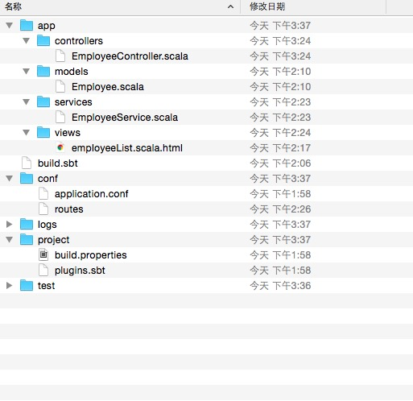
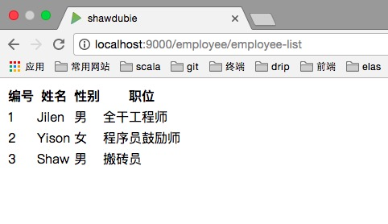
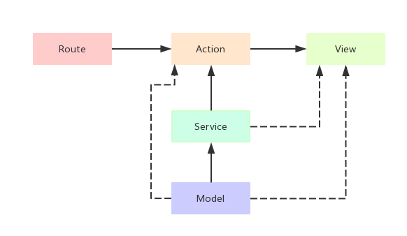

Play! Framework 系列（二）：play 的项目结构
在 Play! Framework 系列（一）中我们初步了解了一下 Play! 的各种特性以及优势，那么从现在开始我们将正式接触 Play!。本文将介绍一下 Play! 的整体结构，然后通过一个非常简单的例子来阐述各个结构之间的关系以及如何利用 Play! 约定的结构去合理地组织我们的业务逻辑。
结构概览

上图为基于 Play! 而创建的一个简单的 Web 应用，在上一篇文章中我们说过 Play! 是「ROR」风格的框架，通过上图我们也可以看到 Play! 是典型的 MVC 架构框架，另外 Play! 也采用 「约定由于配置」，我们只需要按照其约定的结构去组织我们的代码就可以很轻松地实现一个 Web 应用，那么接下来我们就去了解一下 Play! 中各个结构的特点以及功能吧。
业务描述
我们将通过实现一个小应用的方式去了解 Play! 的基本结构，这样会更加清晰一些。需求描述：
- 实现一个简单的公司员工信息列表。
可以看到，我们将要实现的 Web 应用非常简单，接下来我们就通过这个小小的需求去把玩一下 Play! 吧。
app
app
└ controllers
└ models
└ views
目录 app 排在结构图中的最上面，因为是按照首字母排列的，所以它理应在最前面。当然，它在我们整个 Play 应用中也是非常重要的，几乎我们所有的业务代码都包含在该目录下面，既然它如此重要，排在最前面也无可厚非。在 app 下三个子目录，分别是：controllers、models 以及 views。
我们也可以在 app 目录下增加一些目录，比如，我们需要利用 Play! 的 Filter （后面会介绍）来实现一些需求，那么我们可以在该目录下新增一个 filters 目录，专门用来管理 Filter 的业务逻辑。例如：
app
└ controllers
└ models
└ views
└ filters
接下来我们将详细介绍该目录下的三个核心结构：controllers、models 以及 views。
models
在 MVC 结构的 Web 应用中，M 对应的就是 Model，在 models 下，我们实现数据访问的一些逻辑，一般来说，数据库中的一个表就对应一个 model 类。例如：
我们将要显示「员工」列表，这里我们需要数据库中的「员工表」，那么在 models 下，我们创建一个表示员工信息的 model：
case class Employee (
id: Long,
name: String,
sex: String,
position: String
)
一般情况下，我们也需要在 models 下实现操作数据库的逻辑，但是当业务比较复杂的时候，整个文件看上去会特别凌乱，并且后期也不好维护，所以这里我们引入 services，我们将在 services 下实现所有与数据库打交道的逻辑，而 models 下，我们只需要它定义相应的 model 类就可以了。
app
└ controllers
└ models
└ views
└ services
services
我们将在 services 下新建一个 EmployeeService 去实现员工信息的查询操作：
注：本文不涉及数据库，所以在这里我们把数据都写死，数据库连接后面的文章会详细讲解。
class EmployeeService {
val jilen = Employee(
id = 1,
name = "Jilen",
sex = "男",
position = "全干工程师"
)
val yison = Employee(
id = 2,
name = "Yison",
sex = "女",
position = "程序员鼓励师"
)
def getEmployees: Seq[Employee] = Seq(jilen, yison)
}
views
View 对应的就是 MVC 结构中的 V，在该结构下，我们实现程序中的视图，也就是利用 Play! 的模板去实现 html 页面，在 view 中，我们一般只做数据的渲染，很少实现复杂的逻辑。为了呈现员工列表，我们在 views 下创建一个名为 employeeList.scala.html 的文件，在该文件下，我们主要实现数据的渲染，这里只写一些主要的代码：
@(employees: Seq[Employee])
<table class="employee-list">
<tr>
<th>编号</th>
<th>姓名</th>
<th>性别</th>
<th>职位</th>
</tr>
@for(e <- employees){
<tr>
<td>@e.id</td>
<td>@e.name</td>
<td>@e.sex</td>
<td>@e.position</td>
</tr>
}
</table>
controllers
前面我们创建好了 model、servic 以及 view，那如何将 model、service 中的数据渲染到 view 中去呢？这个时候就需要 controller 了，Controller 对应于 MVC 中的 的 C，在 controllers 下面，我们需要实现一些列的 action，通过这些 action 来将整个 Web 程序的数据联系在一起。为了将前面创建的 model、service 以及 view 联系起来，我们在 controllers 下创建一个 EmployeeController：
class EmployeeController @Inject() (
cc: ControllerComponents
) extends AbstractController(cc) {
val employeeSerivce = new EmployeeSerivce
def employeeList = Action { implicit request: Request[AnyContent] =>
val employees = employeeSerivce.getEmployees()
Ok(views.html.employeeList(employees))
}
}
这里我们简单介绍一下 Play 中的 「Action」，Play 中的 「Action」 实际上是一个「特质（trait）」，我们上面的代码实现了一个 「Action」， 这里实际上是使用了 object Action，然后 「object Action」 中的 「apply」 方法会返回一个 Action：
// object Action 的 apply 方法
final def apply(block: ⇒ Result): Action[AnyContent]
conf
conf
└ application.conf
└ routes
在 conf 下面，我们主要放置整个项目的配置文件和路由文件。
application.conf
该文件将配置 Play! 应用的一系列信息，比如 secret key，数据库信息等，由于我们的应用比较简单，所以这里不需要配置该项，在后面的文章中，我们将专门介绍如何管理 application.conf。
routes
前面我们实现了 model、service、controller 以及 view，那我们如何通过浏览器去访问我们的应用呢，这里就需要使用「路由」了，应用程序的所有路由都将在 routes 中实现，这些路由就是应用程序的入口。例如：
要想访问我们之前实现的「员工列表」，我们就需要在 routes 中指定相应的路由：
GET /employee/employee-list controllers.EmployeeController.employeeList
指定好路由之后，当我们在浏览器中输入 http://localhost:9000/employee/employee-list 的时候，就能访问到「员工列表」页面了。

关于 routes，我们在 route 文件中只是写了这么一段去指定，当编译完成之后，我们在 target/scala-2.12/routes/main/router/ 下可以看到一个名为 Route.scala 的文件，在文件的末尾可以看到：
def routes: PartialFunction[RequestHeader, Handler] = {
case controllers_EmployeeController_employeeList0_route(params) =>
call {
controllers_EmployeeController_employeeList0_invoker.call(EmployeeController_0.employeeList)
}
}
可见其实 routes 在 play! 中的实现是一个方法，它是一个「偏函数」当某个请求被匹配到了就调用相应的方法，如果没有匹配到则报错，所以我们也可以自己实现某个路由，而不用 play! 的这种方式，当然用 play! 约定好会更加清晰和简单。
在介绍完 routes 之后，我们有必要知道一下当我们在浏览器中输入某个链接的时候，play! 的各个模块之间是如何调用的，如下图：

当我们访问某个链接的时候，该链接就是对应的一个路由，该路由会去匹配某个 Controller 中的 Action，接下来 Action 要去调用所依赖的 Service 中的方法，这些方法将数据获取到传递给 Action，然后 Action 将这些数据送给 View，View 就会将我们所需要的页面渲染出来了。这个流程如图中的实线所示，同时 Controller 也会依赖 Model，有时候 View 也会去依赖 Model 以及 Service。
build.sbt
该文件用来定义我们项目的一些基本信息以及项目所需要的一些依赖的信息，比如项目的名称、所属组织、版本信息、scala 的版本以及一些依赖的定义等等，在我们的应用中，build.sbt 可以这样定义：
name := "HelloWorld"
organization := "com.shawdubie"
version := "1.0-SNAPSHOT"
lazy val root = (project in file(".")).enablePlugins(PlayScala)
scalaVersion := "2.12.2"
libraryDependencies += guice
libraryDependencies += "org.scalatestplus.play" %% "scalatestplus-play" % "3.1.0" % Test
build.sbt 文件在 sbt 启动的时候就会被读取，然后 sbt 就会去加载我们在里面定义的一些信息，比如我们声明的一些依赖。build.sbt 可以包含许多信息，关于更详细的我们后面再讨论，这里只需要知道她。
project
project
└ build.properties
└ plugins.sbt
该目录下主要放置 sbt 构建之后的文件，在构建之前，该目录下一般就只有上面所列的两个文件。
build.properties
这里定义了该项目所依赖的 sbt 的版本信息，例如该项目中 sbt 的版本就可以这样声明：
sbt.version=0.13.15
plugins.sbt
在该文件下我们声明该项目所依赖的一些插件，比如我们使用了 play sbt 插件：
addSbtPlugin("com.typesafe.play" % "sbt-plugin" % "2.6.3")
结语
本文通过一个例子让我们大致了解了 Play! 的基本结构，文中有一些一笔带过的内容我们将在后面的文章中详细介绍，这里只需要知道就可以了。本文的例子请戳 源码链接